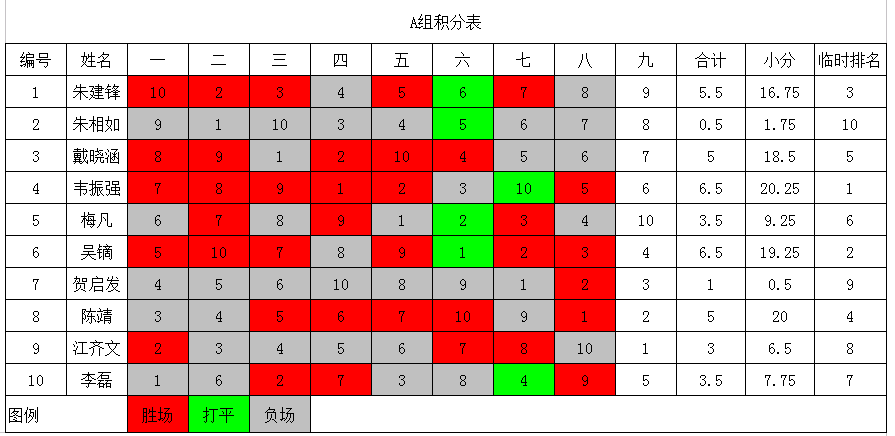
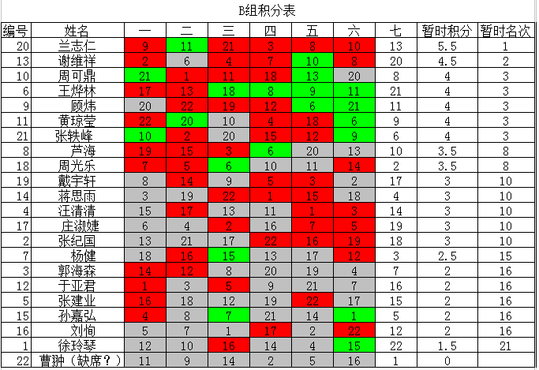

第八届浙江五子棋公开赛截止A组8轮，B组6轮，积分表
#1 第八届浙江五子棋公开赛截止A组8轮，B组6轮，积分表 作者：卯寻月 发表时间：2011-8-21 16:35:21
［此帖子已被 卯寻月 在 2011-8-21 16:54:17 编辑过］
［ 萱萱 于 2011-8-21 17:00:48 时花20金币送鲜花一朵］
［ 萱萱 于 2011-8-21 17:00:52 时花20金币送鲜花一朵］
［ 雅匪 于 2011-8-21 17:04:36 时花20金币送鲜花一朵］
［此帖子已被 卯寻月 在 2011-8-21 17:08:58 编辑过］
［ 中中 于 2011-8-21 17:38:49 时花20金币送鲜花一朵］
［ 中中 于 2011-8-21 17:38:56 时花20金币送鲜花一朵］
［ 中中 于 2011-8-21 17:39:04 时花20金币送鲜花一朵］
［ 掌棋宣传员 于 2011-8-21 22:05:43 时花20金币送鲜花一朵］
［ 掌棋宣传员 于 2011-8-21 22:05:44 时花20金币送鲜花一朵］
［ 掌棋宣传员 于 2011-8-21 22:05:45 时花20金币送鲜花一朵］
［ 掌棋宣传员 于 2011-8-21 22:05:45 时花20金币送鲜花一朵］
［ 掌棋宣传员 于 2011-8-21 22:05:46 时花20金币送鲜花一朵］
#2 Re:第八届浙江五子棋公开赛截止A组8轮，B组6轮，积分表 作者：萱萱 发表时间：2011-8-21 16:51:29
 辛苦了，楼主
辛苦了，楼主
#3 Re:第八届浙江五子棋公开赛截止A组8轮，B组6轮，积分表 作者：何柔 发表时间：2011-8-21 17:00:08
祝贺大家
#4 Re:第八届浙江五子棋公开赛截止A组8轮，B组6轮，积分表 作者：卯寻月 发表时间：2011-8-21 17:10:39
算小分，算错好几次
#5 Re:第八届浙江五子棋公开赛截止A组8轮，B组6轮，积分表 作者：卯寻月 发表时间：2011-8-21 17:12:06

［此帖子已被 卯寻月 在 2011-8-21 17:31:53 编辑过］
#6 Re:第八届浙江五子棋公开赛截止A组8轮，B组6轮，积分表 作者：测试规则 发表时间：2011-8-21 17:28:18
第六轮周可鼎颜色有误#7 Re:第八届浙江五子棋公开赛截止A组8轮，B组6轮，积分表 作者：卯寻月 发表时间：2011-8-21 17:33:34
改过了
#8 Re:第八届浙江五子棋公开赛截止A组8轮，B组6轮，积分表 作者：dyccj 发表时间：2011-8-21 17:37:05

#9 Re:第八届浙江五子棋公开赛截止A组8轮，B组6轮，积分表 作者：连心 发表时间：2011-8-21 18:09:08
#10 Re:第八届浙江五子棋公开赛截止A组8轮，B组6轮，积分表 作者：小元 发表时间：2011-8-21 18:14:22
从A组和B组的情况来看，下届A组的名单已经能确定6个了吧